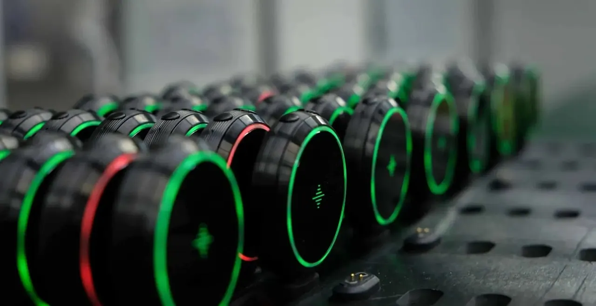

From Concept to Mass Production of a Wearable Device

The essential steps to build a wearable, from the concept phase to mass production.
I stayed concise to keep this page easy to read, and for confidentiality. If you have any questions, feel free to contact me.
Project Description
As the head of product, I was responsible for the full development and manufacturing of Soundbrenner Core, the world’s first smartwatch for musicians. I ensured the successful project development, manufacturing and launch
Main product features are:
Vibrating metronome to stop using painful audio clicks. Vibrations are 7x stronger than any other smartwatch
Contact tuner. In a simple twist, the Core transforms in an accurate, magnetic contact tuner
dB Meter to protect your ears. Real-time dB monitoring to monitor your surroundings
Smartwatch made out of stainless steel, crafted with durability and design in mind
Usage of sizeable 7G ERM motor (7 times stronger than the average smartwatch)
A highly challenging magnetic lock system (that we patented) to make the watch removable from its base
Overall design needs to stay thin despite the 2 points mentioned above
Complex firmware to link and synchronize up to 5 devices together with less than 15ms delay, and an accurate tuning feature
At least 5 days of battery life when used daily
Project Outcome
2 years of work
1 patented design
Successful 1.5 Million USD raised on Kickstarter (5,000 pre-orders and the most crowdfunded project in Hong Kong)
Happy customers
The 4-in-1 tool designed for musicians. Always ready to help you mastering your craft.
Worn by famouns artists. Leather, silicon or nylon straps to fit your artistic journey.
Our patented magnetic lock system.
Unlock the watch from its craddle to tune any instrument. Once you’re done tuning, you can throw it back and it will automatically lock in place.
Timeline
These 2 years needed to build this product can be simplified into two parts: the development phase and manufacturing.
Building a hardware product requires developing simultaneously several parts such as the mechanical and electrical designs.
Other essential processes need to be handled while designing the product (selecting the right suppliers, accessories, packaging, etc).
A few illustrated processes
Click on ▸ to reveal the pictures 📸
Development
Industrial & Mechanical Design
1. First drawings taking into account the dimensions of key electronic components
2. First 3D print to confirm if we like the overall volume of the device
3. We made a few iterations to confirm the ergonomics
4. Countless design evaluations (and teardown!) from other products that inspired us
5. This is one iteration of a mechanical part, with 9 variants. It took around 30 iterations to finalise our design
6. A lot of design refinement had to get done for accessories as well
7. Several high-quality mockups to make a final choice on the materials and dimensions
8. Evaluating different colors and materials
9. One of our DFM (design for manufacturing) meeting. This was one of the hardest and crucial process
10. Final product using mechanical parts out the molds
Electronics
1. First electronic board to test out and confirm our key components
2. Custom boards are sometimes required to confirm the usability of a feature
3. First electronic board with final dimensions to fit our mechanical design
4. Countless of tests were made to make sure the PCB covers all functional requirements
5. First build of PCB placed in their respective casing
Packaging
1. We checked other packagings to understand what we could do in term of material and dimensions
2. First prototype to confirm the overall user experience (we don’t care about how it looks at this step)
3. Mockups to evaluate our design and materials, as well as selecting the right suppliers
4. Final artwork
5. Golden sample confirming our design for mass production
Manufacturing
Fully Functional Prototypes
1. First fully functional prototype. Some iterations were necessary to make all features work correctly
2. Significant work was spent on polishing the cosmetics. Here the two screens were too visible.
3. Several reliability tests had to be finalised, such as humidity and drop tests
4. First device confirmed ready to kick-off mass production
5. The first build of 20 devices. A very exciting moment. It took a few more builds before production ramps up
Injection Molding
The fabrication of the mold begins with a large piece of steel
After a few weeks of fabrication, the mold is ready for production. You can notice the 2 cavities for this mold
One cavity. This mold was for the case of the device
Doing some color mixing at our injection molding partner
A few adjustements are necessary to make the plastic texture and color perfect
These adjustments require a lot of waste and rejected parts
The mold goes into a large machine that will inject the plastic in it
In this video, you can see that the mold has completed making two casings
Glass Fabrication & Other Processes
Here is how our top glass is fabricated:
A glass sheet needs to get cut
The glass pieces need to undergo several cutting and polishing processes.
And here is how we laser-etched the back of our devices for our kickstarter backers:
Mass Production
1. These are all parts coming from our suppliers for mass production. A very exciting moment!
2. Each worker had to learn a specific assembly task
3. Some issues during assembly had to be fixed by building special equipment (fixtures and jigs)
4. Quality control team. I spent numerous hours with them mostly to set our expectations in term of quality
5. My table when reviewing issues at the assembly line. A very challenging time because each issue needs to be fixed fast while the production is running
6. It felt very satisfying to finally see the first devices out of the assembly line
7. Devices fully packed and ready to ship!
8. After 2 years of work, it felt very rewarding to see the first cartons ready to be shipped
Devices charging at the assembly line
Team & Accessories
Manufacturing & Design Team
Our production line operators celebrating the shipment of our first batch!
A guitar in the production line (necessary to test our tuner feature). A first time for our contract manufacturer!
Our mechanical and industrial designers testing different materials
Our manufacturer’s management team I have been working with for at least 2 years to make this product, celebrating the successful shipment of our first batch
Accessories
These are all accessories included in the packagingWe also developed a wide range of straps (leather, nylon, silicon)
Product Unboxing
Unboxing - Core
Unboxing - Core Steel
Product shots
These are the pictures of the final product that I enjoyed taking whenever I had some spare time.